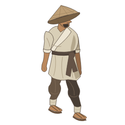
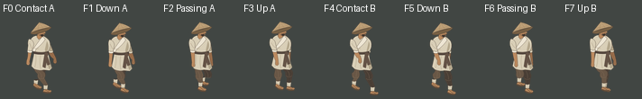

displayed separately
Authoring reference only. Eight drawings, 75 ms each, 600 ms loop. Whole 256 canvas → 89 px. No image calls, final illustration, gameplay proof or motion approval.

D0 travels screen down-right on slope 0.5. Near = anatomical RIGHT, viewer-left hip; far = anatomical LEFT. This stationary preview assesses rough shapes only.
